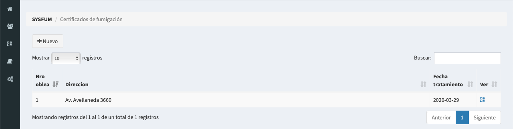
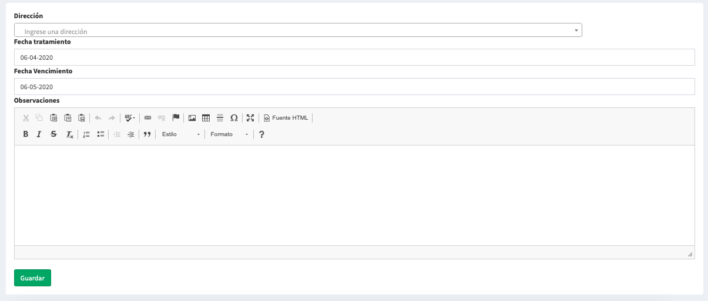
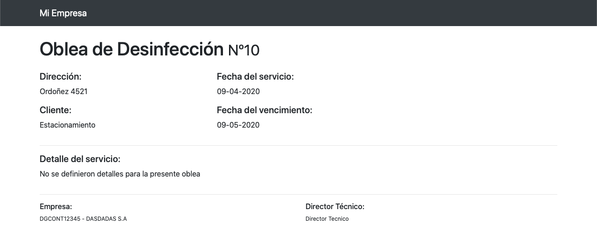

Actualmente el sistema admite dos tipos de obleas distintos, para desinfección o de limpieza de tanque de agua potable. (Se encuentran bajo el icono en la barra de navegación )
Dentro del módulo de certificados, encontrara un listado ordenado con el Número de oblea, dirección y vencimiendo.
Desde el cuadro de busqueda podra encontrar rapidamente una oblea emitida hace tiempo por su número o dirección.
Con el boton Nuevo podra acceder al formulario de carga para emisión de nuevas obles. A la derecha de cada oblea el icono le permitira imprimirla.
Al momento de querer emitir una nueva oblea, debera completar el siguiente formulario.
Que posee los siguientes campos:
La oblea sera confirmada luego de clickear el boton guardar, y ya no podra ser modficada.
Luego de emitida la oblea, ya se encuentra lista para ser impresa. Bastara con apretar el icono , se abrira una pestaña con la oblea y el cuadro de dialogo de impresión.
Recuerde deshabilitar el Encabezado y pie de paginas si no quiere que el link de impresión aparezaca en la misma
NOTA: Se recomienda utilizar Google Chrome para realizar la impresión ya que otros navegadores suele modificar el estilo para que ocupen la mayor parte de la hoja
Si desea exportar a PDF y/o insertar un membre personalizado, puede consultar esta guia.
Al escanear el código QR, se visualiza un resumen de la oblea donde aparecen los datos de la empresa que lo emitio, junto con su Numero,fecha de emision, vencimiento y detalle. Cargados a la hora de generarla.
